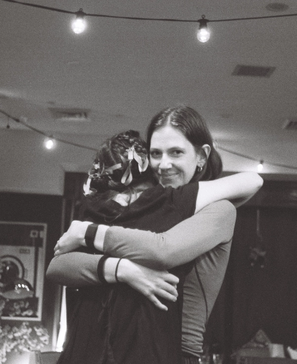

Writer, editor and artist based between Australia and the UK.
At the core of my work is a love of language; how the right word or well-crafted phrase can tell a story, capture a character or conjure a sense of place in an instant. That same instinct for precision carries through everything I make, from conversation design and editorial to my art practice.
I'm a professional writer, working with clients like Apple, the Watarrka Foundation and artist Marta Ferracin, across conversation design, localisation, copy and web content. I'm also the editor of written content at No Art Speak Magazine, a Sydney-based publication championing local artists and accessible arts writing.
My literary work has been published in Voiceworks Magazine and placed first in the 2022 USU Creative Awards. I studied English Literature and Visual Arts at the University of Sydney, graduating First Class Honours with the support of the James Coutts Scholarship and the University of Sydney Honours Scholarship.
Alongside writing, I work in other materials: hot glass, photography, painting and drawing. My visual practice informs my written work, which is anchored in image and attuned to how words look on the page and screen.
I grew up near the Blue Mountains in New South Wales. When I'm not making, you can probably find me outside.
